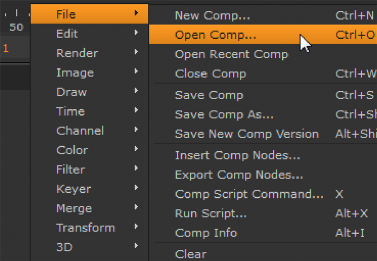
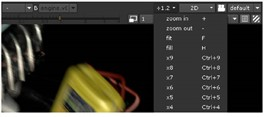

教程1: 合成基础介绍启动Nuke在Windows下启动在Mac OSX下启动在Linux下启动使用工具栏使用菜单自定义你的工作区保存文件和文件备份设置文件/保存选项恢复备份文件关闭自动备份设置工程设置你的工程使用节点插入节点关于连接的提示导入图像序列读取图像的方法在窗口间导航移动视图缩放或扩大视图使用节点图概览在窗口中进行框显使用查看器在查看器中显示图像查看多个输入重新指定图像格式使图像适合工程分辨率使用代理和较低分辨率激活代理模式激活"低分辨率"模式合成图像将两个节点合成对图像进行校色对效果应用遮罩创建并应用贝塞尔遮罩创建动画书预览生成动画书结语
教程1: 合成基础
你好! 这个教程将向你介绍nuke, 你将创建一个简单的合成并且带你浏览过大部分的窗口, 屏幕上的控制, 和其他界面元素。
介绍
我们听说在数字合成方面有许多人宁愿冒着冰雹前进也不愿看一下介绍教程。 显然, 那说的不是你。当你完成这个课程, 你将会很好的了解Nuke工作流而且应该产生了学习其他教程的自信。

在你进入工程之前, 我们先得进行几项管理上的设置 - 像是定义首选项和设置工程设置。 我们知道这些事没什么意思, 但是这些真的非常重要, 所以请耐心, 我们将尽快完成它。
提示: 如果你还未下载教程工程文件并将它放到你创建的Nuke_Tutorials文件夹, 到下载教程资源获取指引。
启动Nuke
可能你的桌面上已经有了Nuke图标。 如果有的话, 双击启动它。 否则的话, 通过以下手段启动Nuke(假设你将Nuke安装在了默认位置)。
在Windows下启动
- 在开始菜单下, 选择所有程序 > The Foundry , 然后选择 Nuke10.0v4。
在Mac OSX下启动
- 打开/Application/Nuke/文件夹然后双击Nuke10.0v4图标。
在Linux下启动
- 打开/usr/local/Nuke/文件夹然后双击Nuke10.0v4图标。
提示: 如果你在Linux下操作, 你也可以直接在终端的命令行中启动Nuke, 只要导航至Nuke文件夹并输入Nuke应用的名称
将会有一个空的Nuke窗口出现。 分割线将窗口分割成不同的面板。 每个面板有一页或者多页, 通过面板顶部的标签分割。 主窗口的左边是工具栏。
默认的面板设置下将会显示查看器(Viewer), 节点图(Node Graph)/曲线编辑器(Curve Editor)和属性(Properties)。 你将在节点图/曲线编辑器面板的节点图标签页内创建此工程的脚本。 我们将在你的工程需要的时候讲解这些屏幕上的控制。
使用工具栏
工具栏包含了你创建你的工程所需的选项, 像是导入图像, 叠加图像, 绘制形状和遮罩(mask), 应用颜色矫正, 等等。 每个工具栏图标都会展示一个包含了你可用操作或者节点(node)的列表。将你的指针悬停在工具栏上你将会看到每个图标的工具说明。
使用菜单
Nuke菜单栏位于你的屏幕顶部, 在主窗口之外。 这个菜单列出了选项file, Edit, Workspace等等选项。使用时在菜单栏中选择或者通过右键菜单选择。
右键菜单是和当前情景高度相关的。 根据你鼠标指针的位置它的选项将会改变。 例如在节点图中右键单击, 你将会看到来自菜单栏的选项和你可以从工具栏插入的节点。 在查看器右键单击你将会看到查看器选项的菜单。

当你找不到适当的控制或者菜单选项时, 试试右键菜单。 许多选项只有当你需要使用它时才会显示。
提示: Nuke顶部的菜单栏在不同的操作系统上是不同的, 但是右键菜单无论你使用什么操作系统都是相同的。
自定义你的工作区
Nuke提供了多种自定义你窗口布局的方法。 是时候生成你自己独有的Nuke版本了! 在这个教程中你不需要调整默认布局, 但是为什么不试试满足你自己个人的需求呢? 你可以通过以下方法重新调整窗口布局:
拖动不同面板间的分割线。
要分割面板, 单击内容菜单(在每个面板左上角的格子按钮), 然后选择Split Vertical 或者Split Horizontal。
要放弃面板, 在内容菜单中选择Close Pane。

要给面板添加新的标签页, 在内容菜单中选择内容选项, 例如New Viewer(新查看器)或者 Curve Editor(曲线编辑器)。
点击标签页上的"x"关闭标签页。
要移动标签页, 直接拖动它的标签到主窗口内的其他面板。
要孤立标签页作为一个浮动窗口, 将它的标签拖到主窗口外, 或者直接按住Ctrl(Mac用户使用Cmd)单击它的标签名。
将浮动窗口拖进主窗口内面板转换成标签页。
在菜单栏中, 选择Workspace > Save Workspace来保存布局。 选择Workspace > Restore Workspace 来恢复之前保存的布局。
保存文件和文件备份
我们假设你已经知道如何保存文件(提示: 选择 File > Save Comp As)。 另外, Nuke包含自动保存特性来帮助你在系统故障后恢复你的工程。 是的, 我们知道你永远不会遇到这种事情, 但是当它发生, 只要你启用了自动保存你就不会丢失你的成果。
设置文件/保存选项
在节点图中右键单击, 选择 Edit > Preferences。
注意autosave filename文件夹被设置为:
[firstof [value root.name] [getenv NUKE_TEMP_DIR]/].autosave你不需要做任何更改; 这只是告诉Nuke将自动保存备份到你工程文件的同一个文件夹或者
NUKE_TEMP_DIR环境变量提供的文件夹。现在, 你想要Nuke每隔多久自动备份一次你的工作? 每五分钟?
将force comp autosave after选项的改为300秒, 来让Nuke每5分钟自动备份一次你的工作。
单击Save Prefs(保存首选项)来保存修改然后Close(关闭)回到主窗口。
如果你不保存就关闭对话框, 修改叫只对本次Nuke会话有效。
恢复备份文件
你可能会问, "我怎么在系统或者电源故障后恢复备份文件?" 问的好! 当你在此启动Nuke时, 你将会看到一个提示询问你是否为上次打开的文件恢复.autosave文件。 单击Yes然后Nuke就将打开备份文件。
提示: .autosave文件即使你正常退出Nuke也有用, 因为它不会从文件夹中删除。 例如, 重命名.autosave文件来创建你工程之前版本的归档。
有时即使你没有遇到系统故障也会看到恢复提示。 这是因为你没保存修改就退出了Nuke, Nuke识别出.autosave文件的时间戳晚于你想要打开的文件。 这时, 由你决定你想要打开哪个版本的文件。
关闭自动备份
好吧。 你非要读这个, 所以我们可以假设你是个乐意享受成果丢失风险的叛逆者。这是件能让人加速分泌肾上腺素的事。 或者你有关于保存文件的迷之强迫症,想要自己手动做所有的事情。 无论是何种原因, 你可以将"autosave idle"和"force autosave"设为0秒来禁用自动备份。 这就是所有你要做的。 祝你好运。
设置工程
当你开始一个新的工程, 你需要定义工程设置: 工程的长度或帧范围, 每秒回放的帧数, 和输出格式。这些都要在Project Setting对话框中设置。
设置你的工程
在节点图上右键单击, 选择Edit > Project Settings。
在frame range栏中, 输入范围1到28。这是我们为工程创建的镜头长度。
设置24帧每秒(fps)。
单击full size format, 在下拉框中选择PC_Video 640 x 480。
关闭Project Settings控制面板。
提示: 在Project Setting控制面板中, Color标签确定了你显示和输出设备的色彩集成。 你不需要在这些教程中更改LUT, 但是我们建议你研究并且在你自己的工程中设置它。
现在, 你完成了一个新工程的标准准备流程。 在设置的过程中, 你用菜单栏访问了多种特性, 并且现在你将使用菜单栏来插入节点, 创建合成树。
使用节点
节点是构成你想要完成的一系列操作的基石。 节点树是展示操作执行顺序的示意图。 按以下操作来添加几个节点开始你自己的节点树。 结果将创建工程的背景。
插入节点
插入节点:
在工具栏中, 点击第一个图标来显示Image分类的节点。
从中选择Constant(纯色)来将这个节点添加到节点图。
当你插入新的节点, 它的控制面板将会显示用于定义节点结果的参数。在本例中, Constant节点将会创建固态背板。
在Constant控制面板中, 单击颜色轮来打开取色器(Color Picker)。
拖动颜色滑块和轮中的指针来选择一个亮色, 一个适合用于合成背景"地平线"的颜色。 然后关闭颜色轮窗口。
这时, 你可以将"Constant"重命名为其他更具体的名字。
在控制面板中, 单击Constant名称, 你现在可以编辑它的名字, 所以输入背景然后按回车。
此后, 我们称这个节点为"背景"节点。
关闭背景节点的面板。 当你需要再次打开它时, 只要双击节点控制面板就会再次出现。
单击背景节点来选择它。 然后, 单击鼠标右键然后选择Draw > Ramp(渐变)。

拖动Viewer1节点上箭头的尾巴到Ramp1节点上。 你将看到背景节点和渐变节点的输出和渐变控制出现在了查看器窗口内。
单击Ramp1控制面板内的Color(颜色)标签。 然后选择能和你背景颜色相配的一个神色。
单击控制面板中的Ramp标签来重新激活覆盖层的控制。 然后拖动p0和p1控制点来调整背景上渐变的分布和角度。
- 当你满意结果时, 关闭Ramp1的控制面板来移除覆盖层。
关于连接的提示
大部分节点都有输入和输出连接器来建立他们之间计算的先后关系
在插入节点后尝试用以下方式将它们连接起来:
拖动输入或者输出连接器到其他节点上来建立连接。
先选择一个节点, 再按住Shift选择其他节点, 然后按下Y来将第一个节点连接为第二个节点的输出。
先选择一个节点, 再按住Shift选择其他节点, 然后按下Shift+Y来将第二个节点连接为第一个节点的输出。
选择一个节点然后按下Ctrl/Cmd+Shift+X来将它从节点树上拆分出来。

对于有两个输入的节点, 可以选中并按下Shift+X来交换A/B输入。
将遮罩连接器拖到其他节点上,来将它提供的图像作为选中节点的遮罩。
导入图像序列
在这个工程中, 你需要导入几个图像序列来作为前景, 并且还需要一个背景。
读取图像的方法
单击节点图的空白处。这是为了确保没有选中任何节点。
在节点图上右键单击, 然后选择 image > Read (或者在Nuke窗口内单击R)
提示: 在已有的读取节点上单击R, 可以打开这个节点的文件路径浏览器。
将会出现一个文件浏览器。 在这里你可以选择你想要导入的文件。 当你在这个窗口中浏览文件时, Nuke会将带有帧编号的序列帧显示为单个文件对象。
浏览到 Nuke_Tutorials/CompBasics/ 目录。
收藏这个目录。 在文件浏览器的左侧窗口单击鼠标右键, 然后选择 Add(添加)。
输入书签名称, 或者使用默认值(文件夹名称), 然后单击 OK。
打开 engine_rgba 目录, 选择 engine.v01.####.exr 图像序列, 然后单击 Open(打开)。
Nuke将检索图像序列并将它的缩略图显示在节点上。 Read节点的控制面板将显示图像的分辨率和帧范围。
提示: Nuke从图像自身的格式读取图像, 但是Read节点使用线性颜色空间输出结果。 如果需要, 你可以改变Read节点控制面板上的Colorspace选项, 或者插入 Color > Colorspace(颜色空间) 节点来决定你要输出或者计算的颜色模式。
框选(按住左键不放然后拖动)选择背景和Ramp节点。然后将它们拖到右边来为其他节点腾出空间。
从右键菜单选择 Image > Read 来导入另一个图像序列。 使用文件浏览器选择 Nuke_Tutorials/CompBasics/smoke_left.wh/smoke_left.####.rgba 图像序列。
再添加一个读取节点来检索 Nuke_Tutorials/CompBasics/smoke_right.wh/smoke_right.####.rgba 图像序列。
像上图一样调整节点的位置, 为创建节点连接腾出空间。
在窗口间导航
当你的节点树增加更多节点时, 节点图面板可能会显得有些小了。 当然, 你已经知道了如何调整窗口大小和悬浮它, 但很快你就会发现你的显示区域还是不够用了。 是时候学习一些导航操作方便你在节点图(和其他窗口中)工作了。尝试以下导航控制:
移动视图
- Windows/Linux: 按住Alt键和鼠标左键在节点图中拖动。
- Mac OS X: 按住(Option)Alt键和鼠标左键在节点图中拖动。
当你拖动鼠标时, 你会移动节点图视图。
缩放或扩大视图
- Windows/Linux: 按住Alt键和鼠标中键在节点图中拖动。
- Mac OS X: 按住(Option)Alt键和鼠标中键在节点图中拖动。
向左拖动放大, 向右拖动缩小。
- 键盘缩放: 按 加(+) 键放大, 按 减(-) 键缩小。
使用节点图概览
当节点树超过窗口边界范围时, 右下角会出现一个导航框。 你可以拖动其中的方框了快速导航到节点树的其他位置。
在窗口中进行框显
- 在你的键盘上按下F来在你的节点图边界内框显所有节点树的内容。
节点图的导航控制同样可以适用于查看器。
使用查看器
节点上的邮票, 那些小图片, 通常称为缩略图。 邮票显示了每个节点将会给节点树中的下一个节点提交的图像。 很小巧, 但是不适合正式的合成工作。 你需要打开查看器来看到完整图像。
你可以同时打开多个查看器。 并且每个查看器你可以有10个页面/缓冲; 它们允许你在节点树中的不同视图切换。
当你启动Nuke时, 你将看到节点图中有一个默认Viewer节点, 你可以直接拖动它的连接箭头到其他节点上来显示节点的输出。 你可以通过在菜单栏中选择 Viewer(查看器) > Create New Viewer(创建新查看器) 或者按 Ctrl+I 来创建新查看器。
在查看器中显示图像
要在查看器中显示图像:
拖动Viewer节点的连接器到 engine.v01 的Read节点。
备选方法: 选择 engine.v01 的Read节点然后按1来连接Viewer节点。 Nuke将在查看器中显示节点的输出。
按住Alt键(Mac用户使用Option键)和鼠标左键在查看器中拖动来移动视图。
按住Alt键(Mac用户使用Option键)和鼠标中键在查看器中拖动来缩放视图。你也可以使用查看器顶部的"缩放"下拉菜单来缩放视图。

按下F来使当前图像适合查看器边界。
你可以通过查看器查看这个图像的多个通道。 顶部的"RGB"标签表示现在展示的是red(红), green(绿), blue(蓝)通道的结果。
要查看单个通道, 按R(red), G(green), B(blue) 或者 A(alpha)。 当你按下这些快捷键时, 顶部的表现将会受到当前显示通道的影响。
再按一次通道快捷键回到"RGB"显示, 或者在通道下拉菜单中选择RGB。
要查看附加的通道, 按A显示alpha通道, 然后在通道下拉菜单中选择 lightingpasses.reflection 。
现在你能看到图像文件的反射遮罩。
从通道下拉菜单中选择rgba.alpha来重置当你按下A键时将要看到的通道。
再次按A键切换为显示所有彩色通道。
查看多个输入
要查看多个输入:
选择smoke_left剪辑的Read节点, 然后按你键盘上方的数字键2。
这会为所选的节点创建第二个查看器连接。 当鼠标悬停在查看器窗口上时, 按下相应的数字键来显示对应的输出图像。
将鼠标指针移动到查看器上, 按1显示engine.v01剪辑。按2显示smoke_left节点的输出结果。
用这种方式, 你可以将多个图像连接到同一个查看器上然后在它们之间切换。
选择其他每个节点按数字键来建立它们和查看器的连接。
将鼠标指针移到查看器上, 然后按数字键来查看每个连接上的节点。
当你在不同图像间切换时, 可能图像看起来是一样大的。 但是请看查看器的右下角, 你会发现图像可能会是不同的分辨率。
Nuke允许单个合成中有多个不同的分辨率, 但是你需要确保这些图像符合工程的分辨率。 下面将讲解如何将合成中的元素合适地对齐。
重新指定图像格式
在Nuke脚本中创建的元素(例如背景和Ramp)自动继承工程设置中的分辨率。导入的图像不一定符合工程分辨率, 所以需要重新指定图像格式。
使图像适合工程分辨率
单击engine.v01剪辑的Read节点来选择它。
单击右键然后选择 Transform(变换) > Reformat(重定格式)
为节点图中的所有Read节点重复前两步。
将鼠标指针移动到查看器上, 按下键盘数字键(1,2和3)来在连接上的图像间切换。
现在每个图像的分辨率都应该符合工程分辨率了。
如果你对工程设置进行了修改, 所有被设为"root.format"的元素也会跟着更改。 如果你没有对图像进行重定格式, 图像会保持它原本的格式, 不受工程设置影响。
使用代理和较低分辨率
代理是你想要最终创建的图像的低分辨率版本。 它能在许多合成任务中让你更快地工作。然后当你准备好创建最终输出的时候, 再关闭代理模式回到全尺寸版本。
左为全尺寸, 右为代理
Nuke可以自动根据你图像的分辨率生成代理。 你可以在 Edit > Project Settings(工程设置) 中指定方法。
要切换为你在工程设置下设置的代理分辨率, 你应该使用查看器中的"proxy"按钮。
并且, 你还可以使用"较低分辨率"按钮来为单个查看器设置较低分辨率。 "较低分辨率"在全尺寸和代理模式下都有效果。
激活代理模式
在节点图上单击鼠标右键然后选择Edit > 工程设置.
确保查看器窗口是打开的。
按Ctrl+P切换到代理模式
查看器中会有一个标签提示你正处在代理模式。
将鼠标指针移到查看器上, 按加(+)键几次来放大图像。
按Ctrl+P几次来在高分辨率和代理模式间切换。
在你继续之前, 按Ctrl+P切换回全尺寸模式。
激活"低分辨率"模式
在"低分辨率"下拉菜单中选择1:4来改变显示分辨率为完整分辨率的25%。
在低分辨率下, Nuke计算图像所需的时间会较少。
将"低分辨率"下拉菜单改回1:1, 使用100%分辨率。
如果没有处于代理模式, 你将回到完整分辨率。 如果代理模式处于激活状态, 将显示代理模式分辨率的100%。
合成图像
Merge(合并)节点使用多种算法来将两个或者更多图像进行合成。 在本例中, 我们将使用非常简单的"A在B之上(over)"合成来将前景图像叠在背景图像之上。
你可以通过工具栏或者菜单添加合成节点, 但是这次我们将直接使用快捷键。这个技巧是选择你想要合成的节点然后按键盘快捷键来添加一个合成节点。
将两个节点合成
选择连接到engine.v01的Reformat1节点。 这提供第一个合成操作的前景层。
按住Shift选择Ramp1, 现在应该同时选择了两个节点(Reformat1和Ramp1)。
按M键来插入Merge节点。
你所选择的第一个节点作为Merge节点的A输入(前景), 第二个节点作为Merge节点的B输入(背景)。 如果需要, 你可以按Shift+X交换两个输入。

在Merge节点的控制面板, operation(操作)参数决定了两个图像合成使用时的算法, 选择的算法将会显示在节点图中节点的名称中。
重新摆放节点, 让节点树看起来像这样:
继续接下来一层, 选择连接着smoke_right的Reformat3节点, 然后按住Shift选择Ramp1。
按M键插入Merge节点将两个节点叠在一起。 这会将smoke_right图像合成在背景之上。
默认的合成算法是"Over", 不符合我们的需求。在Merge2控制面板中, 点击dropdown下拉菜单中选择screen(滤色)。
在Merge2控制面板中, 拖动mix(混合)滑块到0.30减少A通道提供的图像。
还需要一个Merge节点。 选择连接着smoke_left的Reformat2节点。 按下Shift键然后选择Merge1节点(你插入的第一个Merge节点)。
按下M将两个节点进行合成。 在Merge3控制面板中, 将mix滑块设为0.75。
合成的结果应该和以下图像类似。
对图像进行校色
校色和滤镜能帮助你整合元素得到一个更好的合成。 在本例中, 你想要只调整前景的图像, 所以你应该将color correction(校色)节点加在Merge节点之前。
选择Reformat1节点。 然后在节点图上右键单击并选择Color(颜色) > Exposure(曝光)。这将会添加Expose1节点。
假设你想要调整red颜色通道的数值。 将鼠标指针悬停到查看器窗口然后按R来显示red通道。
在Expose1控制面板中, 取消勾选gang(联合)。 这允许你分别调整单个颜色通道。
拖动red滑块调整颜色值。 当你完成后, 在查看器上按R来显示每个通道。
Exposure节点符合预期, 但是结果不太像是高光。 颜色的改变太过平均。 要是有办法限制, 或者说是遮罩颜色矫正的范围, 应该会有更好的合成效果。嗯……
对效果应用遮罩
你可以对节点应用遮罩来限制它节点效果对图像的影响。下面展示了如何创建一个贝塞尔遮罩来限制颜色矫正。
创建并应用贝塞尔遮罩
如此创建并应用贝塞尔遮罩:
点击节点图的空白区域, 确保没有选中任何节点。
在工具栏中, 选择Draw(绘制) > Roto(动态遮罩)来插入Roto节点。
在查看器窗口中的图像上绘制贝塞尔图形, 像这样:
要调整形状的话, 在点上点击选中它, 然后拖动调整它的位置。
要创建锐角的话, 选中点然后右键单击并选择Cusp(尖点)。
要给形状添加点的话, 选择Add Points工具(查看器左侧工具栏中) 然后在形状的边缘上单击。
等你对形状满意了, 将Exposure1节点的mask连接器拖到Roto节点上。
在Exposure1节点的控制面板中, mask参数被自动设为了mask输入的rgba.alpha 通道。在本例中, 就是Roto节点的alpha通道。
创建动画书预览
你可以用查看器窗口中的时间线按钮来播放你的工程, 但是当你注意查看器窗口左下角的帧率(FPS)栏时, 你会发现Nuke并没有提供实时回放。因为Nuke是临时渲染每一帧的。 虽然快, 但是受到你机器性能的限制。
动画书(Flipbook)功能提供更好的实时预览, 因为它为动画书查看器进行了预渲染。 注意动画书特性提供和你当前分辨率同样的预览; 例如如果你在代理模式中, 你的动画书会是代理模式下的分辨率。
提示: 动画书功能会在Nuke > Preferences(首选项)中你设置的文件夹中渲染临时文件。 你可以找到限制动画书特性使用空间的选项。
生成动画书
- 选择你节点树最后的Over节点
- 在菜单栏中选择 Render(渲染) > Flipbook selected (为选中的节点生成动画书)。
- 在预览中输入1-28帧然后点击OK。
- 当动画书准备好之后, 将会启动动画书查看器。 点击Play(播放)按钮查看结果。
- 关闭动画书查看器回到你的工程。
结语
在本次教程中, 你设置好了一个新的工程并且创建了一个简单的合成。 你学习了如何实际使用(至少是如何找到)Nuke的窗口和工具, 然后你渲染出了你合成的结果。 你完成了! 回家吧!
好吧…… 可能还有几件事你需要知道。 在此教程后, 你应该适应了Nuke用户界面, 所以带上你的探险帽然后看看其他教程吧。 自此之后没有特定的顺序, 所以快速掠过直到遇到感兴趣的内容再进行查看吧。